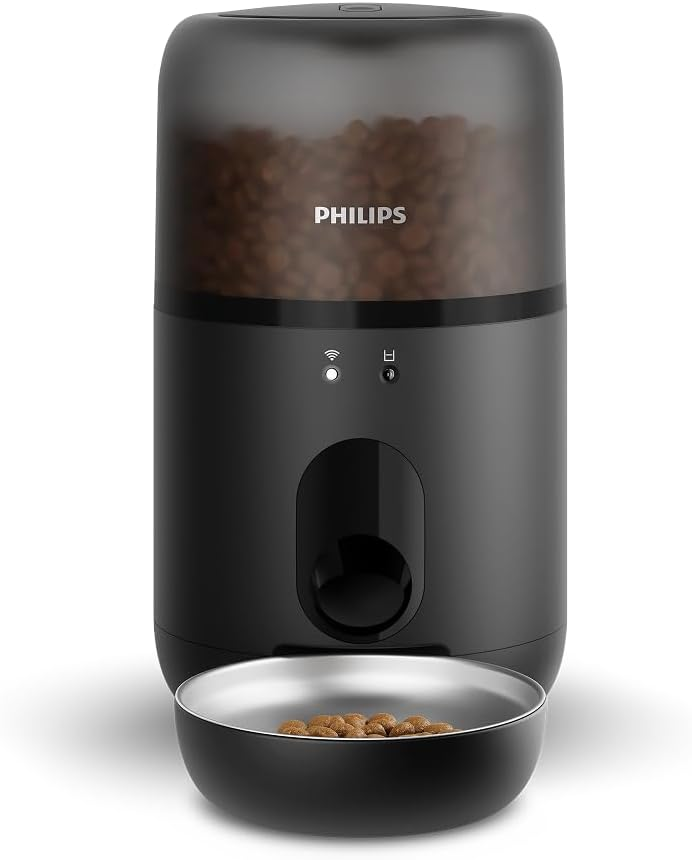
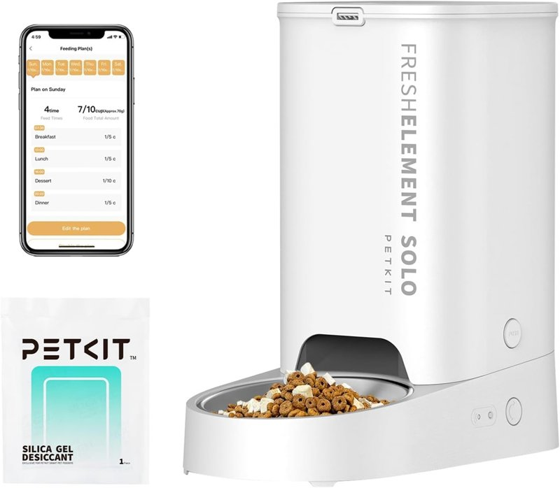
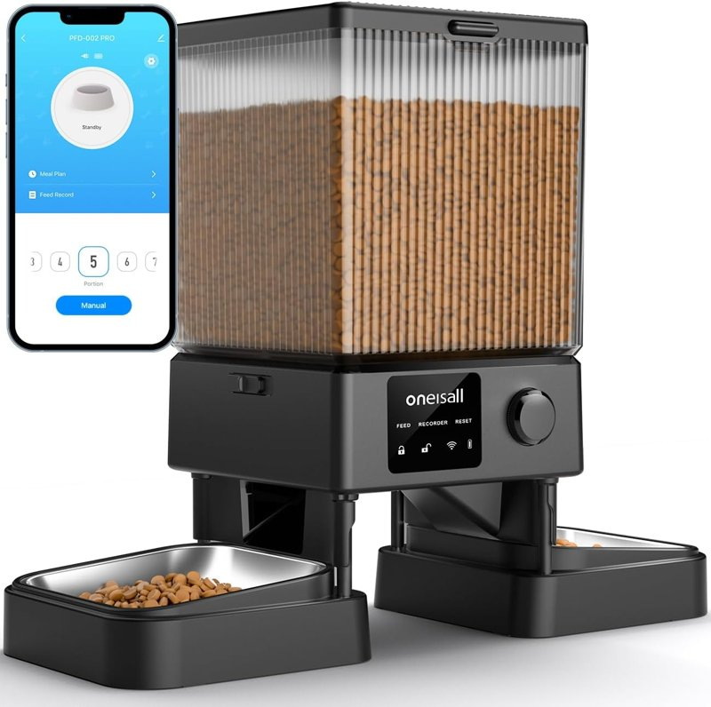
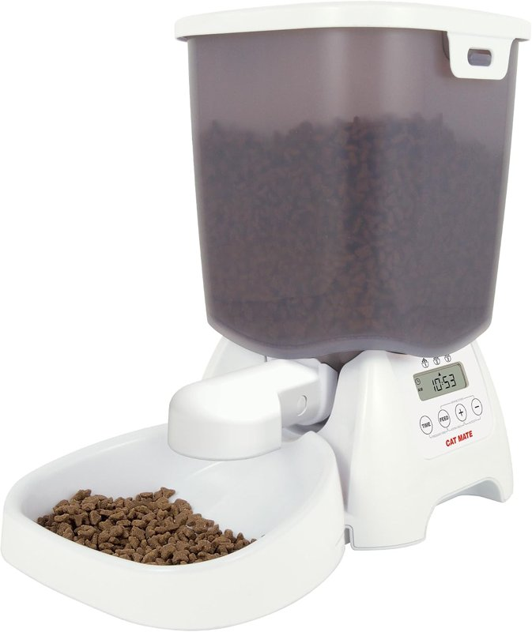
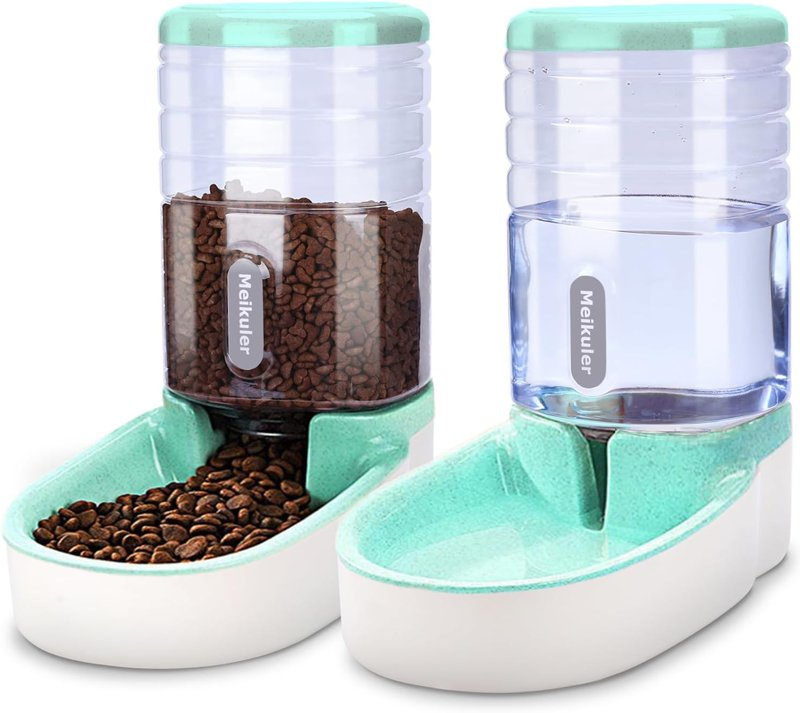

Comederos automáticos para gatos
Por el equipo de Casa y Comparativa · actualizado el 28 oct 2026
Aviso de afiliados: En calidad de Afiliado de Amazon, obtenemos ingresos por las compras adscritas que cumplen los requisitos aplicables. Si compras desde nuestros enlaces, no te cuesta más. En cada producto indicamos quién lo vende y quién lo envía, y marcamos el que no tiene Prime.

- Un gato: Philips Pet Series, 4,5 L, con app (94,99 €). Nuestra elección.
- Dos gatos: oneisall de 5 L con dos cuencos (94,18 €).
- Más barato con app: PETKIT de 3 L (69,99 €; lo vende PETKIT y lo envía Amazon).
- Más económico, sin app: Cat Mate con temporizador (48,99 €) o Meikuler de gravedad (34,54 €; sin Prime).
Con app y con Prime
Lo programas desde el móvil y les sirve la comida a su hora, aunque no estés.

Philips Pet Series PAW3300/02
- Depósito de 4,5 L
- Hasta 20 comidas programables desde la app
- Antiatascos, para pienso seco de 2 a 12 mm
- Batería de respaldo si se va la luz, según la ficha (qué pilas usa y si vienen incluidas: sin dato)
- Cuenco de acero inoxidable, apto para lavavajillas
- 4,5 sobre 5 con 69 opiniones (es nuevo: en Amazon desde mayo 2026)

PETKIT Fresh Element Solo, 3 L
- Depósito de 3 L: unos 1,33 kg de pienso seco, unos 15 días para un gato adulto (dato del fabricante; no es para dejarlo solo tanto tiempo)
- App con wifi de 2,4 GHz; de 1 a 10 comidas al día
- Raciones de 10 g, hasta 5 por comida; pienso seco o liofilizado de menos de 12 mm
- Cable USB y pilas de respaldo si se va la luz (el adaptador y las pilas no vienen incluidos)
- Cuenco de acero inoxidable 304
- 4,3 sobre 5 con 4.309 opiniones

oneisall PFD-002 Pro, 5 L, dos cuencos
- Depósito de 5 L y dos cuencos de acero inoxidable
- App con wifi de 2,4 o 5 GHz, según la ficha; se puede compartir con la familia
- Un depósito lleno da para dos gatos adultos unos 10 días (dato del fabricante; no es para dejarlos solos tanto tiempo)
- Ración de unos 10 g · graba un aviso de voz de 10 s
- Batería de respaldo: sin dato
- 4,4 sobre 5 con 2.541 opiniones
Datos de las fichas de Amazon.es (28 oct 2026). Ninguno tenía el aviso de «devuelto con frecuencia».
Es el más parecido al que usamos en casa: app, batería de respaldo y cuenco de acero que va al lavavajillas. Su ficha está completa, es de Philips y tiene los 3 años de garantía legal comprándolo a Amazon. Eso sí, es nuevo en Amazon.es (desde mayo de 2026) y aún tiene pocas opiniones; el oneisall tiene muchas más.
Opciones más económicas (sin app)
Si no necesitas app, hay comederos más baratos que cumplen. El Cat Mate se programa en el propio aparato (3 comidas al día) y tiene Prime. El Meikuler no se programa: la comida baja sola por gravedad. No tiene Prime y tarda más en llegar, así que es para quien no tenga prisa.

Cat Mate con temporizador digital
- 3 comidas automáticas al día o modo manual, con pantalla LCD
- Hasta 3 kg de pienso seco; raciones a partir de 10 g
- Funciona con 4 pilas tipo C (si vienen incluidas: sin dato)
- Tapa con cierre a prueba de mascotas; apto para lavavajillas, según la ficha
- 4,3 sobre 5 con 1.924 opiniones

Meikuler comedero de gravedad + bebedero (verde)
- Juego de comedero y bebedero, 3,8 L según la ficha (sin dato de si es por depósito o en total)
- Funciona por gravedad, sin programar
- Pies de goma antideslizantes; incluye pala para el pienso
- Entrega gratis el 4 nov a Madrid (sin Prime)
- 4,4 sobre 5 con 2.113 opiniones
Datos de las fichas de Amazon.es (28 oct 2026). Ninguno tenía el aviso de «devuelto con frecuencia». Con el de gravedad no controlas las raciones: si tu gato es glotón, puede comer de más.
Comparativa rápida
| Modelo | Tipo | Precio* | Prime | Vendedor | Depósito (L o kg) | Si se va la luz | Nota (opiniones) |
|---|---|---|---|---|---|---|---|
| Philips Pet Series | App · 1 gato | 94,99 € | Sí | Amazon | 4,5 L | Batería de respaldo (ficha) | 4,5 (69) |
| PETKIT 3 L | App · 1 gato | 69,99 € | Sí | PETKIT (envía Amazon) | 3 L | Pilas de respaldo (no incluidas) | 4,3 (4.309) |
| oneisall 5 L | App · 2 gatos | 94,18 € | Sí | Amazon | 5 L | sin dato | 4,4 (2.541) |
| Cat Mate | Temporizador, sin app | 48,99 € | Sí | Amazon | Hasta 3 kg | Funciona con 4 pilas C | 4,3 (1.924) |
| Meikuler | Gravedad, sin app | 34,54 € | No | Amazon | 3,8 L (ficha) | Va por gravedad | 4,4 (2.113) |
* Precio provisional en Amazon.es el 28 oct 2026; puede cambiar. En el móvil se ocultan algunas columnas.
Nuestra experiencia
En nuestra familia usamos un comedero automático con app (un Xiaomi que Amazon no vende, por eso no lo enlazamos). Hay gatos glotones y otros que comen solo lo que necesitan: con la app vemos cada día lo que han comido, y así sabemos que no se quedan sin comida ni comen de más.
Donde más se nota es en los viajes. Antes dejábamos las llaves a un vecino para que les pusiera comida y agua y les limpiara el arenero. Ahora dejamos comida para una semana y, con el comedero y el bebedero, nos vamos mucho más tranquilos. Pero nunca los dejamos solos: alguien pasa a verlos con regularidad (lo ideal, cada día), comprueba que comen y beben y les limpia el arenero.
- Lava bien el cuenco con agua y jabón, acláralo muy bien y deja que se seque antes de volver a llenarlo.
- Cuando lo vacíes, limpia también el depósito y la salida del pienso.
- Solo pienso seco: nada de comida húmeda.
Cómo elegir
Garantía: las cinco fichas muestran los 3 años de garantía legal; garantía propia de cada marca: sin dato. Días de autonomía del Philips y del Cat Mate: sin dato.
Preguntas rápidas
¿Sirve para comida húmeda?
Los de app y el Cat Mate son para pienso seco, según sus fichas (el Philips, de 2 a 12 mm; el oneisall, de menos de 1,3 cm; el PETKIT, seco o liofilizado de menos de 12 mm). Del Meikuler: sin dato; nosotros solo usamos pienso seco.
¿Con app o sin app?
Con app ves cada día lo que comen y cambias horarios desde el móvil. Sin app es más barato: el Cat Mate se programa en el propio aparato y el Meikuler no se programa; la comida baja sola.
¿Funciona sin wifi?
Las fichas no lo dicen: sin dato. Algunas opiniones del Philips cuentan que, funcionando a pilas, se pierde la conexión con la app.
¿Y si se va la luz?
El Philips tiene batería de respaldo y, según su ficha, sirve la siguiente comida programada. El PETKIT admite pilas de respaldo, que no vienen incluidas. Del oneisall: sin dato. El Cat Mate funciona con pilas y el Meikuler va por gravedad.
¿Quién lo vende?
Casi todos los vende y envía Amazon. El PETKIT lo vende la tienda de la marca (PETKIT-ES) y lo envía Amazon, con Prime y devolución gratis en 30 días, según la ficha. En cada tarjeta lo indicamos.
¿Cada cuánto lavarlo?
A menudo: agua y jabón, aclarar muy bien y dejar secar antes de rellenar. Al vaciarlo, limpia también el depósito y la salida del pienso. El cuenco del Philips es apto para lavavajillas; el resto de piezas: sin dato.
¿Puedo irme de viaje?
El comedero ayuda, pero no sustituye a una persona. Nosotros dejamos comida para una semana, y siempre hay alguien que pasa a verlos con regularidad (lo ideal, cada día), comprueba que comen y beben y limpia el arenero.
Más en «El rincón de tu mascota»
Fuentes y fechas
- Precios, vendedor (Amazon en todos salvo el PETKIT, que lo vende PETKIT-ES y lo envía Amazon), valoraciones, medidas y datos técnicos: fichas de Amazon.es del 28 oct 2026, hora de Madrid, entrega en Madrid, precios con IVA. Philips y oneisall: datos leídos a las 16:39-16:41 y precio y Prime comprobados entre las 18:45 y las 19:15. Cat Mate y Meikuler: entre las 20:15 y las 20:23. PETKIT: a las 20:21 y de nuevo a las 20:26:
Philips Pet Series PAW3300/02 (B0H1R9NT8Q); PETKIT Fresh Element Solo 3 L (B0CD7NRW37); oneisall PFD-002 Pro (B0C5X4N132); Cat Mate (modelo 347) (B004BLVFSK); Meikuler comedero + bebedero (B07ZJ96YRP). - Prime: comprobado el 28 oct 2026 (hora de Madrid), con entrega en Madrid (Philips y oneisall a las 18:45-19:15, Cat Mate y Meikuler a las 20:15, PETKIT a las 20:21); Philips, oneisall, PETKIT y Cat Mate lo tienen; el Meikuler no (entrega gratis el 4 nov, comprobado a las 20:15).
- Pruebas de laboratorio independientes: sin dato.
Aviso de afiliados: En calidad de Afiliado de Amazon, obtenemos ingresos por las compras adscritas que cumplen los requisitos aplicables. Precios y disponibilidad cambian: revisa la ficha de Amazon antes de comprar.